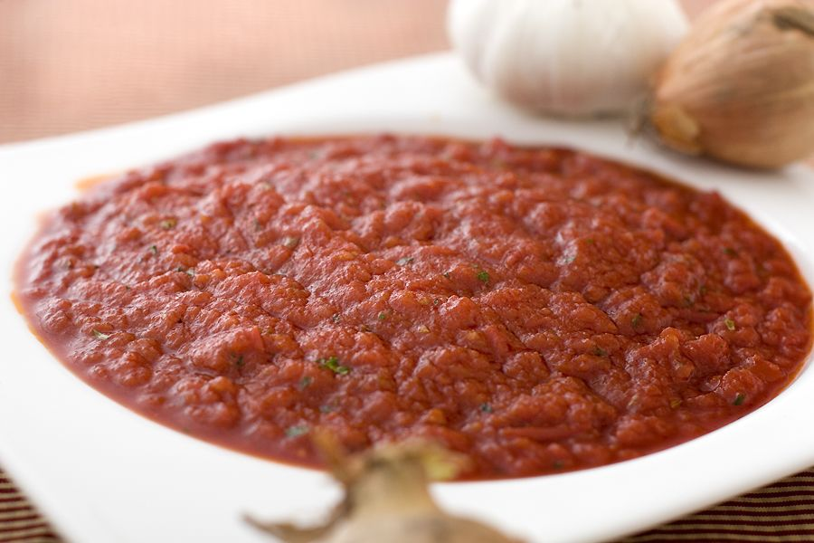

Första steget till en sensation
Degen, såsen och osten är det grundläggande på en pizza. Se till att använda bra råvaror och gör grunden enligt bilden nedan. Ta inspiration från vår meny där vi listat de mest populära pizzorna i Sverige, glöm inte bort att vara kreativ och ha roligt!
Pizzadeg

Pizzasås
Ost
Det finns en mängd olika alternativ när det gäller ost. En del säger att det inte går att byta ut Mozzarella på en pizza, för då blir det helt enkelt inte rätt för dem. Andra tycker om att variera smaken på sin ost, och väljer då ibland att använda andra ostar för att ge sina pizzor en annorlunda smak. Här nedanför listar vi några favoriter.
Topping
Nu har vi kommit till steget där din fantasi ska flöda! experimentera, gör fel, gör rätt, testa allt...Det finns inga gränser! Efter att osten är på finns det en mängd olika typer av kött, grönsaker och även frukt som man kna ha på pizzan. Ta insipration från vår meny för att säkerställa att gästerna blir nöjda.